Dashboard
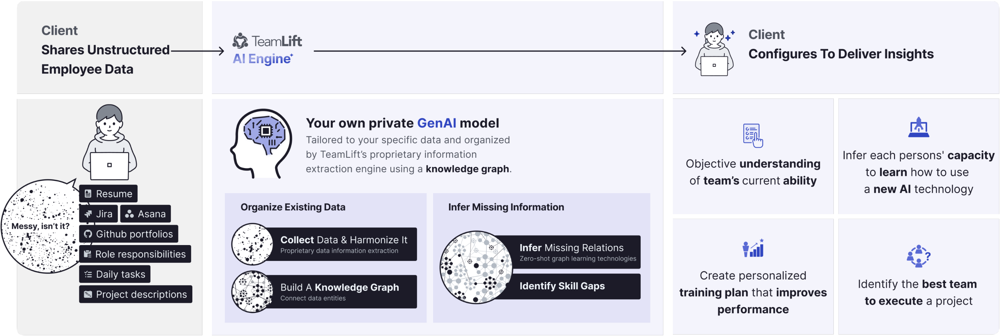
AI-powered skills intelligence platform that connects to a company’s existing data sources and builds a private knowledge graph of every employee’s actual capabilities. Managers see who can do what, which skills are missing for upcoming projects, and who can be upskilled rather than hired. Employees receive a personalized skills profile, a learning roadmap, and visibility into career growth.
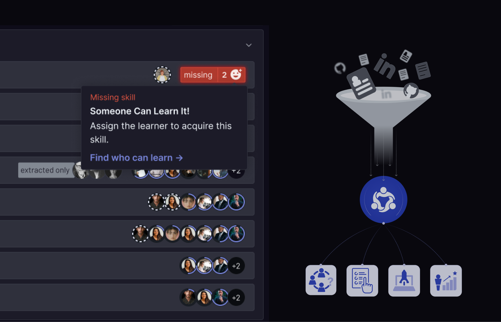
Solution

The AI surfaces skills it has inferred from the employee's data. They can either accept them into their validated wallet or permanently deny them. Validated skills sit alongside, building a living profile that the employee owns and controls.
For each identified skill gap, the platform surfaces the relevant tools to adopt and curated learning resources with an instructor, lesson count, and duration.
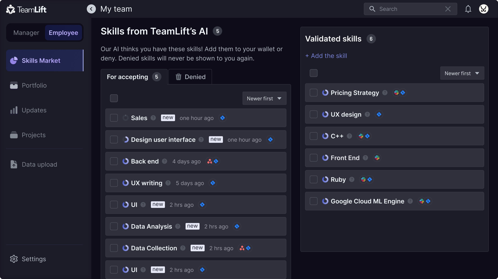
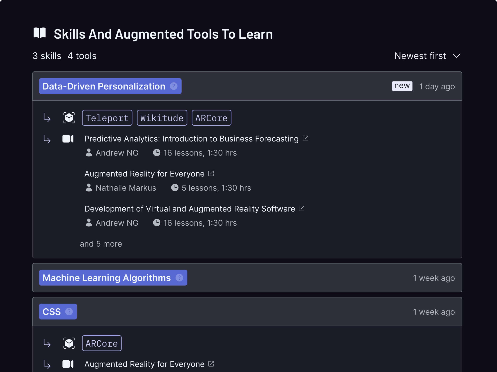
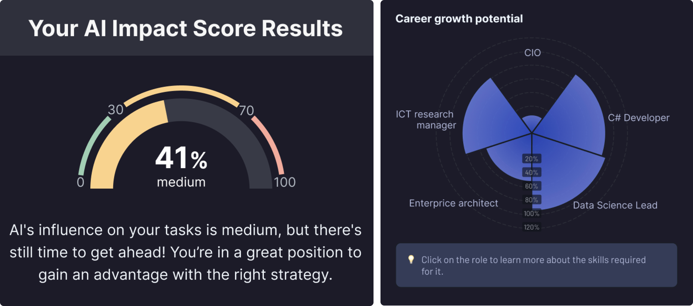
The manager could upload a project and get a ranked list of best-fit candidates by skill count, along with a full breakdown of required skills, showing who has each one, how many people cover it, and which skills are missing entirely across the team.
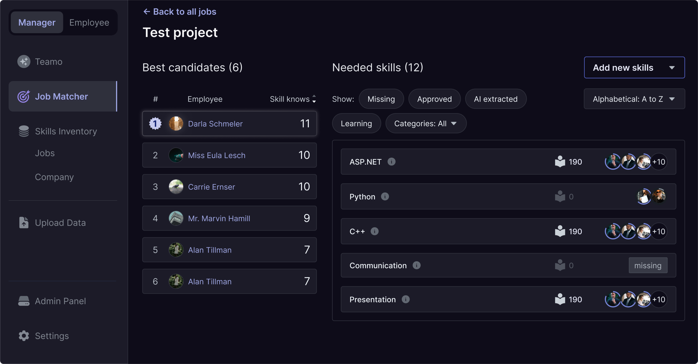
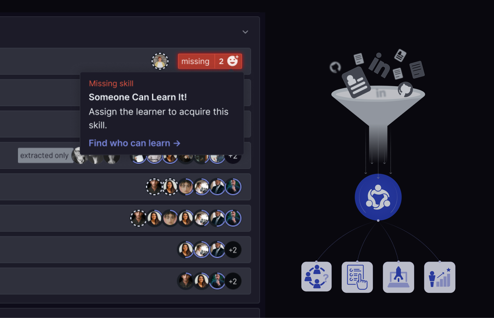
A dark-mode component library built from scratch. Based on Material-UI.
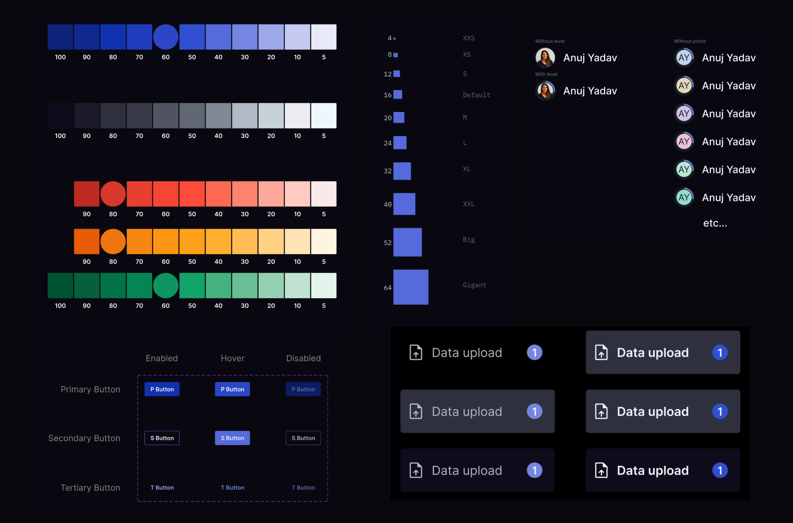
I created sales and product presentation decks for TeamLift, working directly with the founder. The decks explained how TeamLift turns fragmented enterprise data into a structured skills graph, used for capabilities assessment and resource forecasting.
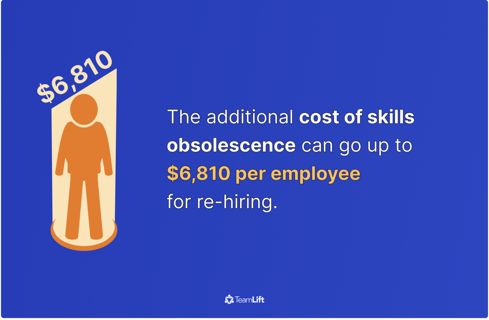
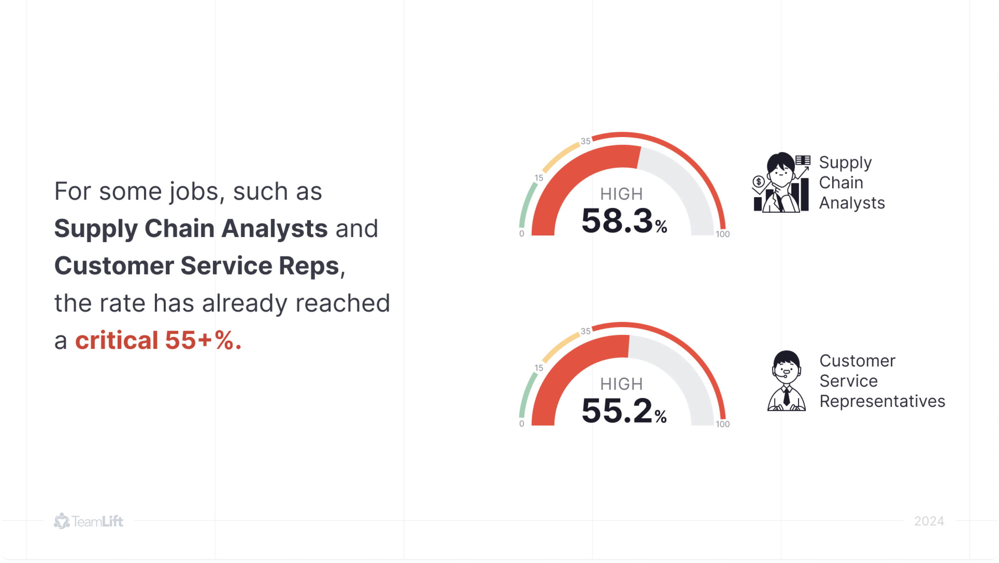
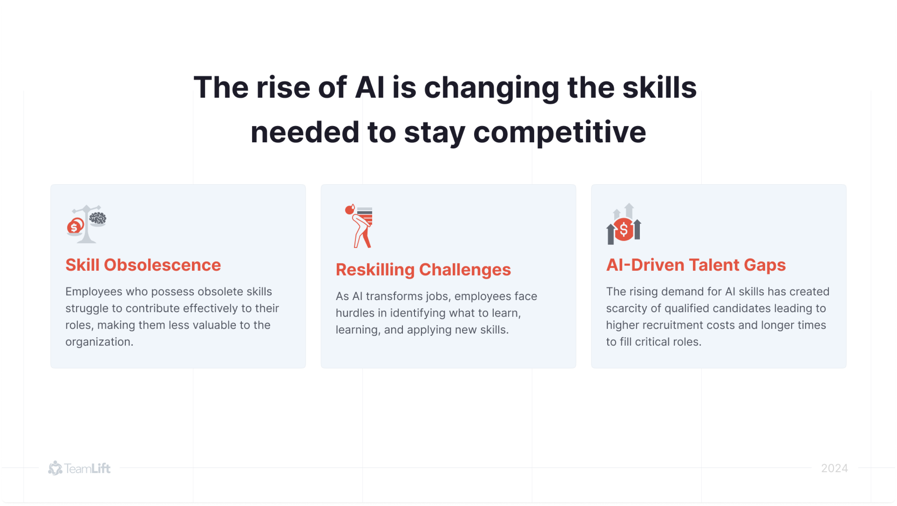